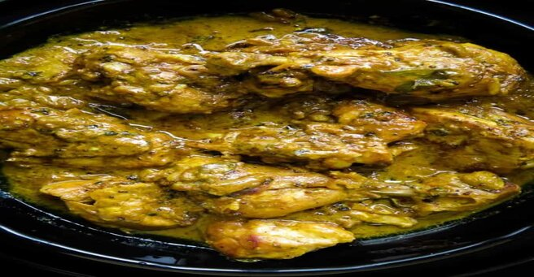

Sri Lankan Black Pepper Chicken Curry
When you get tired of cooking a really spicy Sri Lankan chicken curry using red chilies and need a change in taste then this black pepper chicken curry will make a difference. Too much or too little will make a difference in how the pepper chicken curry tastes. Since the pepper can be a tricky spice powder make sure you keep and eye on the amount of pepper you use. What I mean is, too little and the chicken curry doesn’t have much of the peppery flavor you are going for, too much and you’ll get a slightly bitterness in the back of your throat. You can use this chicken curry with milk rice and lunumiris and it will give you ultimate taste for breakfast.
INGREDIENTS
- 500g of chicken(can include legs and other parts)
- 2-3 tablespoons of tamarind juice(1 tablespoon of tamarind soaked in 1/4 water for 5 minutes)
- 4 tablespoons of oil
- A handful of curry leaves(substitute with a bay leaf)
- A piece of pandan leaf(optional)
- 1 tablespoon of garlic and ginger paste(3 cloves and a 1-inch piece of ginger can be minced for this purpose)
- 1” cinnamon piece
- 3 cardamom pods
- 1 large onion sliced fine
- 2 whole green chilies
- 1 medium-sized tomato sliced into four
- 1/2 teaspoon of turmeric powder
- 2 teaspoon cumin powder
- 3 teaspoon coriander powder
- 2 tablespoons of pepper( start with 1 tablespoon and add more as per your taste)
- Salt to season
- 1 cup of coconut milk
DIRECTIONS
Wash, clean and place the chicken parts in a bowl. Add one 1/2 teaspoon of salt, and tamarind juice (3 tbsps), mix and let the chicken marinate for 15 minutes. Over medium heat, place a cooking pan and pour int he oil(4tbsps). Once the oil heats (1 minutes), add the curry leaves, panda leaf, cardamom(3), and cinnamon (1-inch) followed by ginger-garlic paste(1 tbs). Cook for 2 minutes and then add the onions(1 large), green chilies(2) and tomatoes(1 medium). Sautee the ingredients over low-medium heat until onions and tomatoes turn soft.5-7 minutes. Reduce heat and add the chicken(with the marinade) to the cooking pan. Cook until the tamarind juice is absorbed. Let the chicken brown with a little added oil. Frequently mix the chicken with the spices to avoid the chicken parts sticking to the pan. Add turmeric (1/2 tsp), cumin(2 tsp), coriander(3 tsps), and pepper (2 tbsp) over the chicken while the heat is low. Mix all the ingredients in the pan for 3-5 minutes while cooking the meat with the spices. Cover and let the curry simmer for 5-7 minutes until there is no liquid left, if you prefer to fry the chicken at this stage, add 2 tablespoons of oil and let the chicken brown slightly or continue to cook until all liquid evaporates and proceed to the next stage. Pour in the coconut milk, reduce heat, season with salt if necessary then cover and simmer until gravy thickens and takes on a darker hue for 15-25 minutes.Serve warm with your favorite rice and curry dishes.